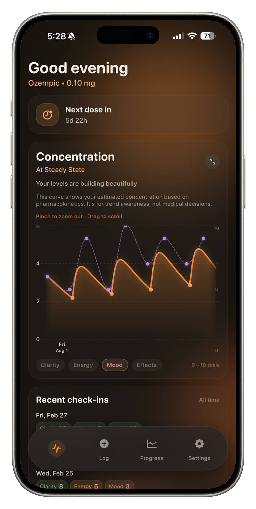
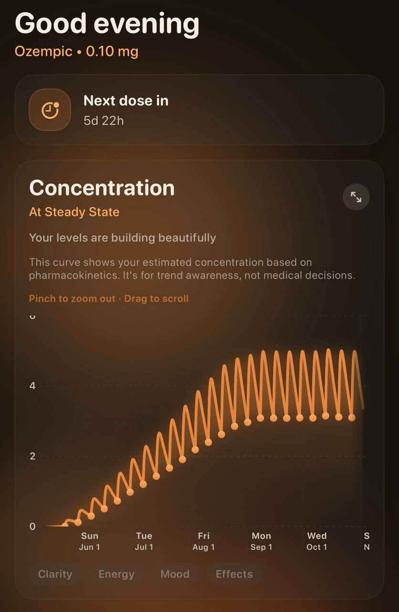
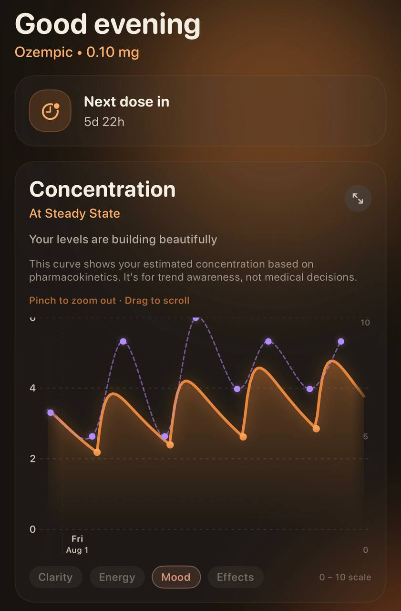
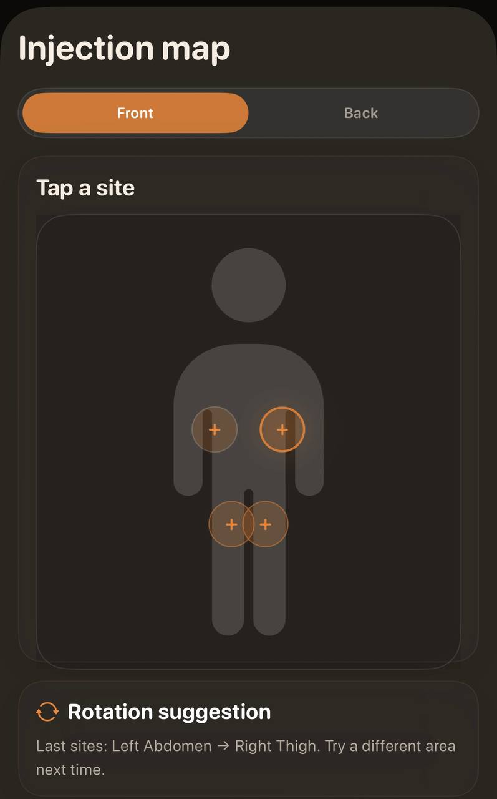
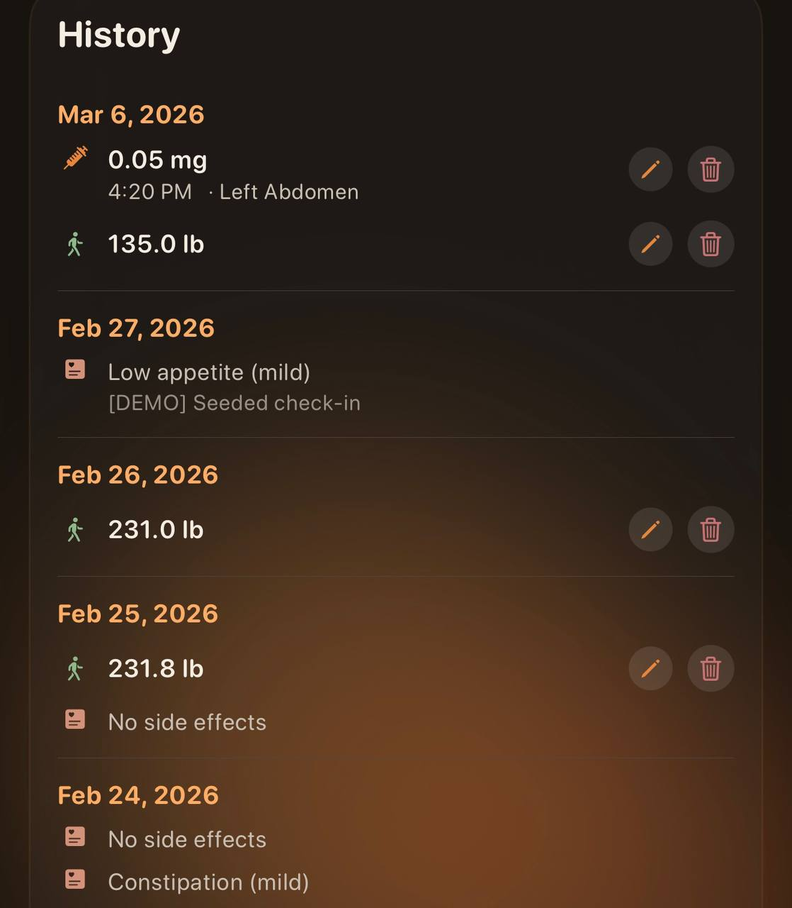

→is 0.125mg daily the same as 0.875mg weekly?
Mynim is the GLP-1 tracker built for microdosers. Live concentration curves. Smart site rotation. Real pharmacokinetic math. Not another weekly shot reminder.

You split your doses. You inject more often than once a week. You track half-lives in your head and wonder what your actual drug levels look like between shots.
You've done the research. You know what bioavailability means. You've read the studies.
But every GLP-1 app out there assumes you take one shot per week and want a reminder about it. That's it. That's the whole product.
You deserve better tools than a calendar notification.
Most people taking GLP-1 medications have no idea what their blood concentration looks like between doses. They feel good, they feel bad, they don't know why.
Mynim models your concentration curve in real time using the published pharmacokinetic data for your specific medication. Semaglutide. Tirzepatide. GLP-1/GIP combinations.
You see the rise. You see the peak. You see the taper. And when you're microdosing, you see how multiple small doses create a different concentration profile than a single weekly injection.
That's not a gimmick. That's information you can act on.
Mynim calculates your active drug concentration using actual pharmacokinetic modeling. Half-life, absorption rate, bioavailability. Real math, not estimates.
Watch your levels rise after a dose and taper as your body metabolizes. Know exactly where you stand before your next injection.
This isn't a graph someone designed to look clinical. It's a graph that IS clinical.




Mynim calculates your active drug concentration using actual pharmacokinetic modeling. Half-life, absorption rate, bioavailability. Real math, not estimates.
Watch your levels rise after a dose and taper as your body metabolizes. Know exactly where you stand before your next injection.
This isn't a graph someone designed to look clinical. It's a graph that is clinical.
Standard GLP-1 apps give you one option: weekly. Mynim gives you full control over your dosing interval. Daily, twice daily, every few days, weekly.
Your protocol is your protocol. Mynim tracks it accurately regardless.
Visual body map. Front and back. Mynim tracks every injection site and when you last used it. A clear indicator shows where to go next.
Left abdomen, right thigh, upper arm. Rotate properly. Reduce tissue stress. It takes two taps.
Log nausea, fatigue, and other side effects by severity after each dose. Track energy, mood, and mental clarity on a 1-10 scale.
Over time, patterns emerge. Mynim gives you the data to find out what is actually happening.
Semaglutide, tirzepatide, or GLP-1/GIP combo. Mynim loads the right pharmacokinetic profile automatically.
Amount in mg, injection site, any notes. Takes ten seconds.
Concentration curves update live. Symptoms trend over time. Patterns surface on their own.
Track exact mg, timing, and notes in seconds with a dosing workflow built for split protocols.
See exactly where you injected last and rotate confidently to reduce repeat-site irritation.
Log nausea, fatigue, and mood with severity scores to expose real trends over time.
Generate complete dose history exports for your records or to review with your clinician.
That's it. One plan. Everything included. No tiers, no upsells, no "premium" features locked behind a higher price.
Start with a 7-day free trial. If Mynim isn't useful to you in a week, cancel. No questions. No friction.
Your data stays on your device. Mynim does not upload your health information to any server.
The curve uses published pharmacokinetic parameters (half-life, Tmax, bioavailability) for each supported medication. It's a model, not a blood test. But it's built on real science, and it gives you a far better picture than guessing.
No. Mynim is a tracking tool. It models pharmacokinetic data based on published research, but it does not provide medical guidance. Talk to your doctor about your dosing protocol.
Semaglutide (sold as Ozempic and Wegovy), Tirzepatide (sold as Mounjaro and Zepbound), and GLP-1/GIP combination medications.
Yes. Mynim works for any dosing frequency. But it was designed specifically for people on non-standard schedules who need more than a basic reminder app.
Open Settings on your iPhone, tap Subscriptions, tap Mynim, tap Cancel. Done.
Mynim is currently available on iPhone only, exclusively through the Apple App Store. We're focused on building the best possible iOS experience right now. Android isn't on the roadmap yet, but if that changes, we'll say something.